How Pakistanis reacted to Imran-Trump meeting might blow you away!
When Khan met the President Trump, everything changed. Here’s how the Pakistani Internet responded:
[ 1 ] Just L O L:
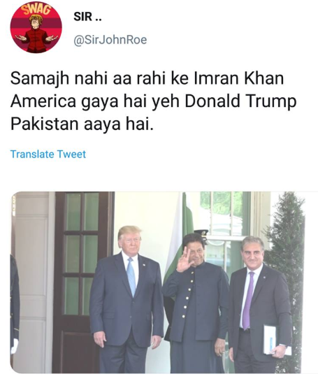[ 2 ] Looks like someone is loving Imran Khan’s style:
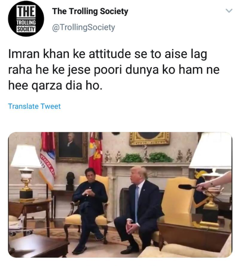[ 3 ] These guys had a small nostalgia!
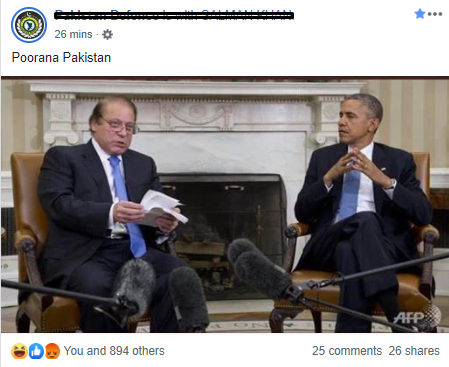[ 4 ] Oops! This guy Just reminded us of the U-Turn:
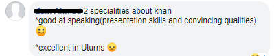[ 5 ] This American welcomed Imran Khan and critised her own President:
[ 6 ] The Naya Pakistan housing scheme, LOL:
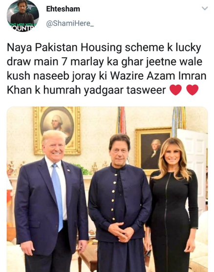[ 7 ] Imraaan Jani vs Modi:
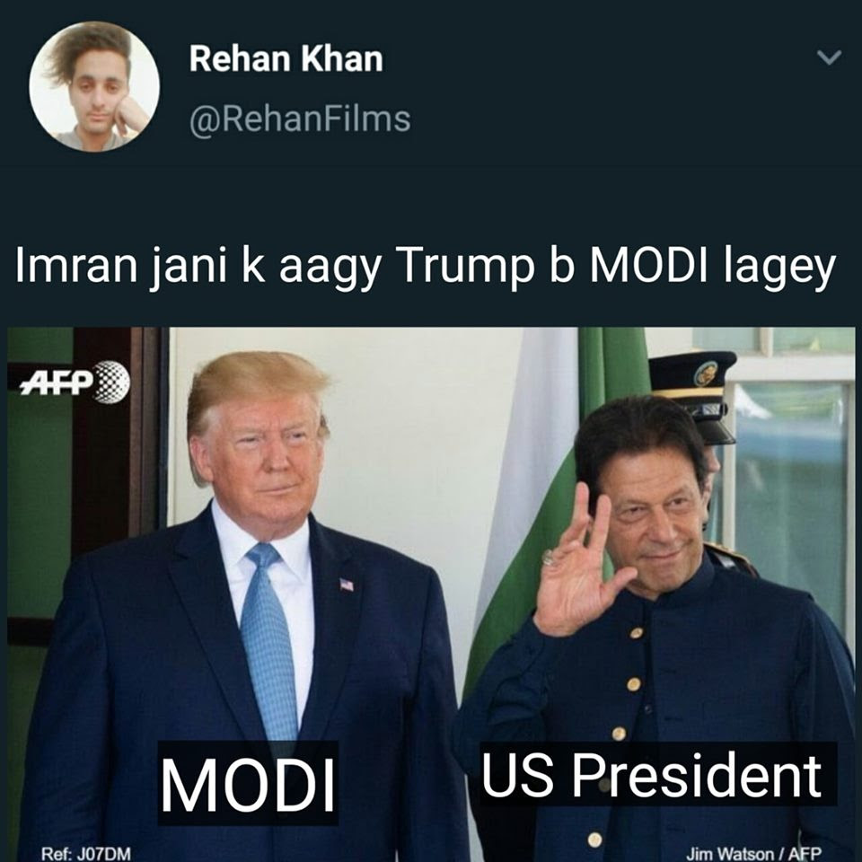[ 8 ] The Back-bencher meme is also here:
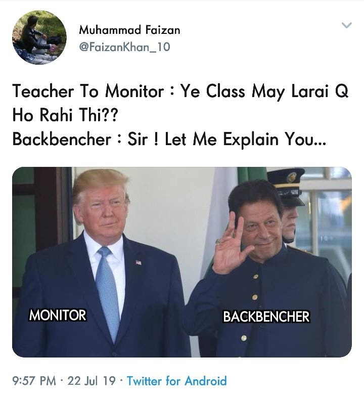[ 9 ] Truth Bombs!
[ 10 ] Some more Isolation:
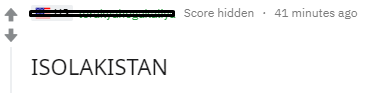[ 11 ] Pakistani Sub-Reddit:
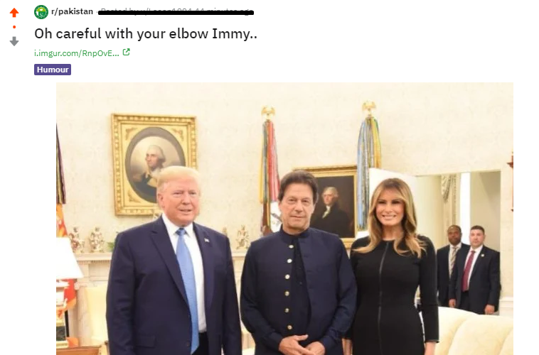[ 12 ] Some more for Melania:
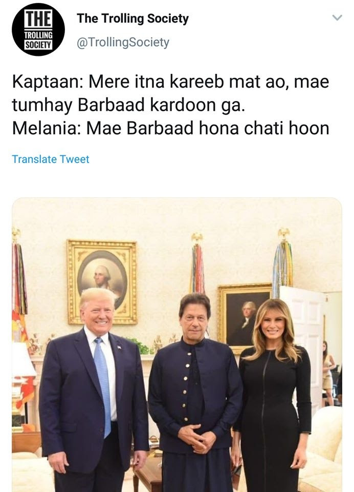[ 13 ] That’s True:
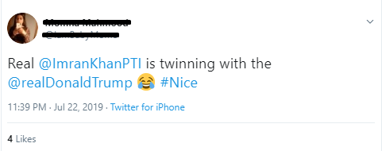[ 14 ] Definitely, definitely Khan is winning!
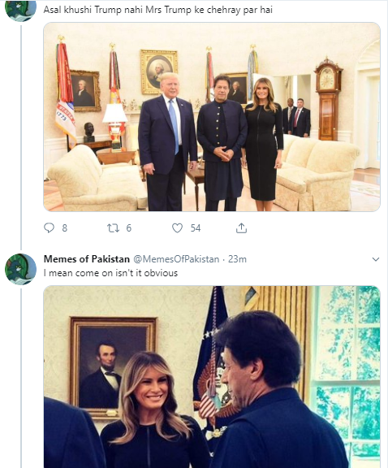[ 15 ] Is Melania seriously giving hints??
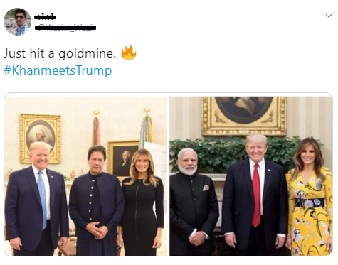[ 16 ] Khan’s Jaan nasheer on Tik Tok:
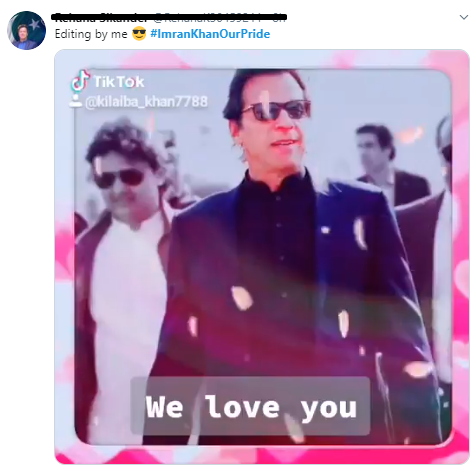[ 17 ] The never ending Indian obsession with Pakistan:
[ 18 ] This guys have figured it allll:
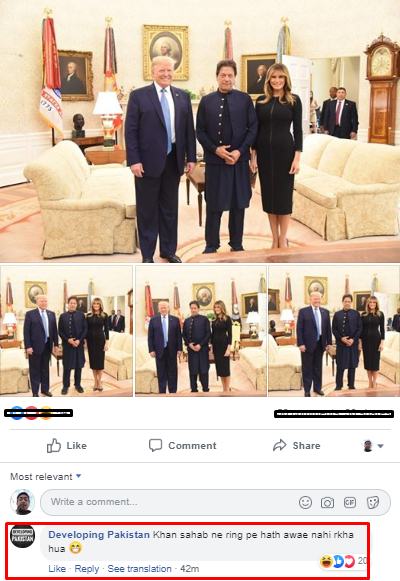[ 19 ] What our Qasim Bhai aka Gulsher from Alpha Bravo Charlie has to say:
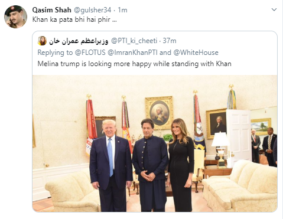[ 20 ] I.. Can’t… LMAO
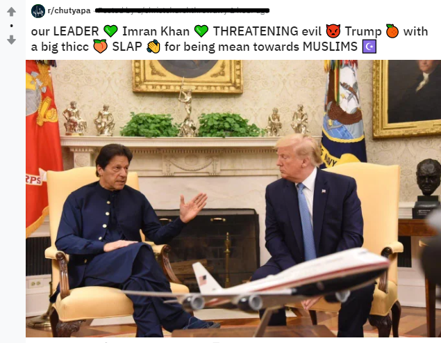